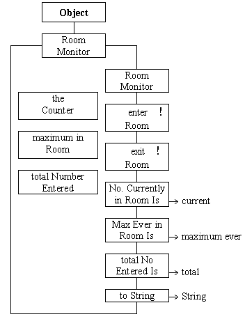

The RoomMonitor encapsulates an instance of the WarningCounter class which it uses to count the number of people currently in the room. Two other data attributes maximumInRoom and totalNumberEntered are used to record other required aspects.

The enterRoom() and exitRoom() actions record a person entering and exiting from the
room. The three enquiry actions numberCurrentlyInRoom(), maximumEverInRoom() and totalNumberEnteredIs() return the values from the three encapsulated data
attributes.
The encapsulation of a WarningCounter instance
within the class reinforces the concept that an class can contain
instances of anything not just primitive ( only int so far)
variables.
The reason for including the toString() action will be explained below.